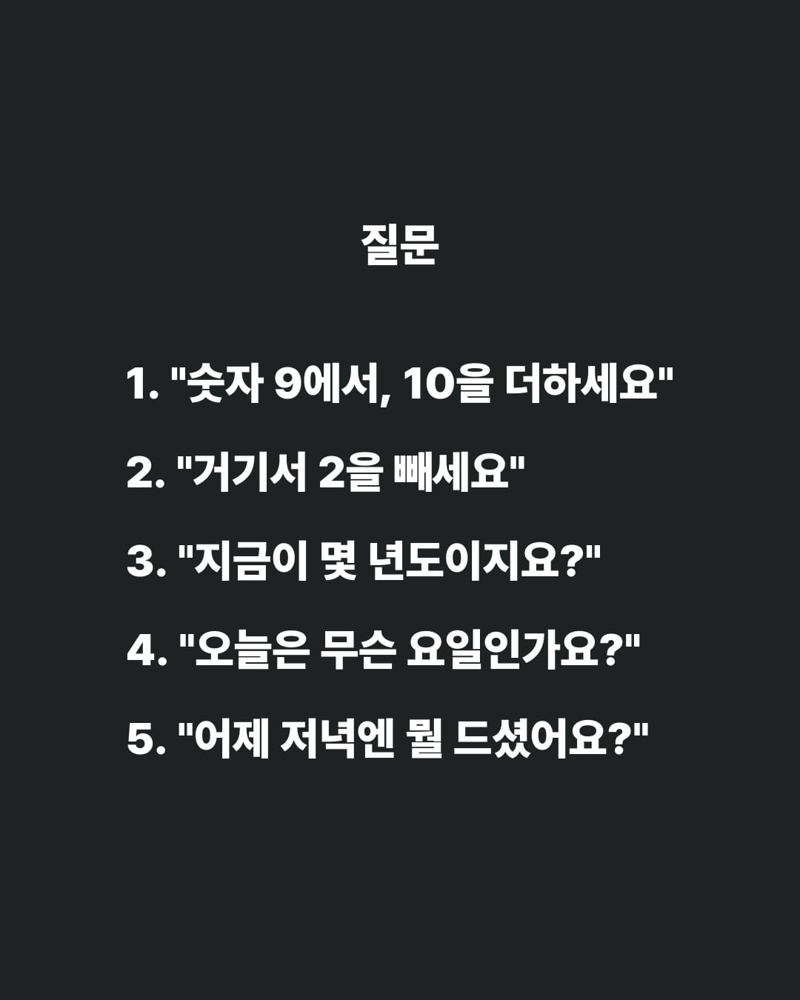

30초 간단 치매 테스트.jpg
댓글
야호 난 치매않이다
어제 저녁 뭐먹었는지 몰라서 실패
질문 드리프트할까봐 걱정했는데 ㄹㅇ검사였네
성공
단어 순서 왜 바꾸냐
저게 검사에서는 말로만 진행하는거야, 아니면 짤 처럼 사진이나 그림도 같이 보여주는거야? 말로만 했다면 나 기억 못했을지도...
검사자가 말로만 들려줘
나 치매 가능성 높네.. 말로 듣는건 굉장히 쉽게 휘발되던데..
지인의 어머님이 경증 치매이신데, 언젠가부터 오늘이 몇요일이고 내일이 몇요일인지를 모르신다 하더라.. ㅠ
몇요일X 무슨 요일O
알아, 길어서
전라도 사투리일껄?
어제 저녁에서 ….. 먹은게없다잉
저기서 ㅅㅂ 섹스 이러면 무조건 기억하는데 ㅋㅋㅋㅋ
와문제어렵네
휴
씨발놈 마지막에 순서 바꿔놔서 치매온줄 알고 위로 올라가서 확인했다.
나도ㅋㅋ 서순 바꿔놓은거 의도한거면 악질인데
어제 저녁에 뭐 먹었는지에서 실패함
그건 자연스러움
중요하지 않은 건 기억에 남기지 않거든
근데 저건 의도적으로 기억해야 하니까 단기적으로 기억할 수 있는 거고
치매로 돌아가신 아버지가 첫 테스트때 저 연필 소나무 비행기를 말하지 못하고 당혹스러워 하시던게 생각난다. 나는 그때 그래도 치매는 아니겠지 하던 마지막 희망이 깨지는 것을 느꼈고.
물론 앞의 내용도 제대로 답변 못하셨는데 앞 문제에서는 그래도 당당하셨지만 첫번째 제시어를 다시 물어봤을때는 확연히 당황한게 보이더라.